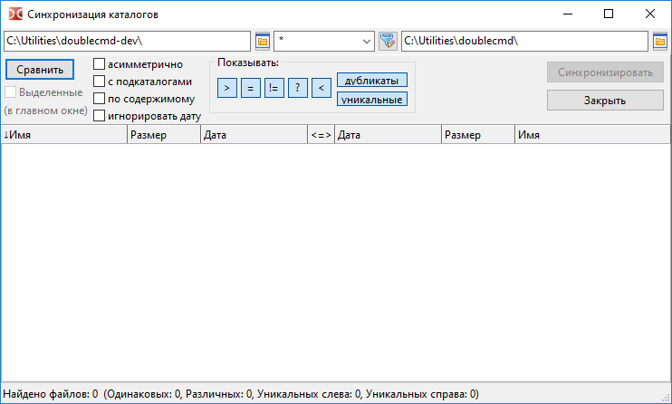
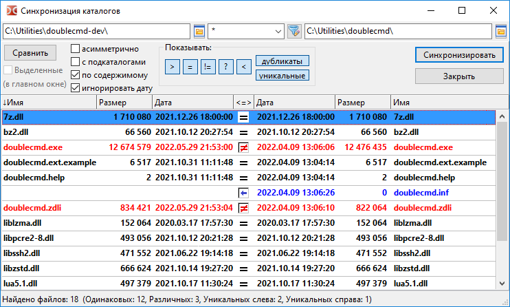

Инструмент синхронизации каталогов сканирует каталоги левой и правой файловых панелей, отображает различия в их содержимом и позволяет сделать их одинаковыми.
Мы можем синхронизировать два локальных каталога или локальный каталог и каталог в виртуальной файловой системе (открытый архив или плагин файловой системы).
По умолчанию инструмент синхронизации сравнивает файлы по имени, размеру и дате модификации.
Способ удаления файлов (в корзину или навсегда) зависит от состояния опции Удаление в Корзину (с Shift - окончательно).
Примечание: Пустые каталоги будут проигнорированы.

В верхней части окна расположены поля с текущими каталогами левой и правой файловых панелей. Мы можем изменить их вручную или с помощью кнопки выбора каталога.
Между ними расположено поле фильтра файлов по маске (звёздочка "*" обозначает любое количество символов, знак вопроса "?" – любой один символ). Файлы, которые не совпадают с маской, будут проигнорированы. Если типов файлов несколько, то они перечисляются через точку с запятой ";" без пробелов. Также мы можем использовать шаблоны поиска ( ), в том числе поиска с информационными (контентными) плагинами. Значение по умолчанию "*" (все файлы).
), в том числе поиска с информационными (контентными) плагинами. Значение по умолчанию "*" (все файлы).
Сравнить – начинает сравнение выбранных каталогов. Прогресс операции сравнения отображается в строке состояния. Если это необходимо, операцию можно прервать клавишей Esc.
Параметры:
Выделенные (в главном окне) – Если отмечено, будут сравниваться только файлы и каталоги, которые были выделены в файловой панели.
асимметрично – Эта опция подразумевает создание резервной копии: копия содержимого левой панели должна быть создана на правой панели. Файлы, которые не существуют на левой стороне, будут отмечены для удаления на правой стороне. Недоступно, если в каталоге справа невозможна операции удаления (например, это архив и его формат не поддерживает модификацию или это CD/DVD).
с подкаталогами – разрешает рекурсивный поиск файлов: Double Commander проверит содержимое всех подкаталогов.
по содержимому – Если отмечено, файлы с одинаковым размером и датой будут сравниваться по содержимому (побайтовое сравнение). Недоступно, если второй каталог в виртуальной файловой системе.
игнорировать дату – По умолчанию Double Commander отдаёт предпочтение более новому файлу и автоматически выбирает направление копирования, но если этот параметр включен, файлы с одинаковым размером будут считаться идентичными.
После изменения этих опций мы должны повторно запустить сравнение каталогов.
Показывать: – Группа кнопок, которая включает или выключает отображение в списке различных групп файлов:
> – Показать файлы, которые будут скопированы или удалены слева.
= – Показать файлы, которые считаются идентичными.
≠ – Показать неидентичные файлы.
< – Показать файлы, которые будут скопированы или удалены справа.
дубликаты – Показать файлы, которые существуют на обеих сторонах.
уникальные – Показать файлы, которые существуют только на одной стороне.
Ниже располагается область, разделённая на три части:
Слева и справа будут отображаться списки файлов. Обе части содержат колонки "Имя", "Размер" и "Дата", мы можем сортировать файлы щелчком по заголовкам.
В средней колонке отображается статус файлов или намеченные действия.
В строке состояния отображается общий результат сравнения.
После завершения сравнения инструмент синхронизации отобразит содержимое каталогов, используя несколько цветов:

Зелёный – Файлы, выбранные для копирования или удаления слева.
Синий – Файлы, выбранные для копирования или удаления справа.
Красный – Файлы с одинаковыми именами, но не идентичные.
Для остальных файлов будет использоваться цвет текста по умолчанию.
Обозначения в колонке "<=>":
С помощью мыши или клавиши Пробел можно снять отметку действия и исключить файлы из операции синхронизации.
Двойной щелчок мыши по имени файла вызывает команду Сравнить по содержимому.
Используя сочетание клавиш Ctrl+C, мы можем скопировать в буфер обмена содержимое всех колонок.
Закрыть – закрывает инструмент синхронизации.
Синхронизировать – открывает диалоговое окно для подтверждения синхронизации, в окне отображаются некоторые подробности о предстоящих действиях:
Здесь мы можем исключить намеченные операции по типу (копирование или удаление) или направлению.
Подтвердить замену – В случае конфликта имён Double Commander будет использовать то же диалоговое окно с выбором действий (пропустить, переименовать и другие), что и при обычном копировании/перемещении файлов.
Команды применяются к файлу под курсором или к выделенным файлам. Все команды, доступные в инструменте синхронизации, добавлены в меню правой клавиши мыши. Назначить или изменить горячие клавиши для этих команд можно в разделе настроек Клавиши > Горячие клавиши (переключитесь на категорию Синхронизация каталогов).
Отметить для копирования (направление по умолчанию) – Double Commander перепроверит файлы и попытается выбрать действие автоматически.
Снять метку копирования/удаления – отменяет назначенное действие и исключает файлы из процесса синхронизации.
Отметить для копирования -> (слева направо).
Отметить для копирования <- (справа налево).
Поменять направление копирования.
Внутренний просмотр слева и Внутренний просмотр справа – открывают файл под курсором на левой или правой стороне в программе просмотра файлов.
Сравнить – вызывает команду Сравнить по содержимому для файлов под курсором.
Отметить для удаления <- (слева).
Отметить для удаления -> (справа).
Отметить для удаления <-> (оба).
<- Удалить слева.
-> Удалить справа.
Удалить с обеих сторон.
Последние три команды удаляют выделенные файлы сразу, до операции синхронизации. В этом случае Double Commander покажет запрос подтверждения.
Примечание: Горячие клавиши для команд Внутренний просмотр слева, Внутренний просмотр справа и Сравнить заданы в исходном коде Double Commander и не могут быть изменены.
Доступно несколько параметров, которые можно изменить только вручную в файле конфигурации doublecmd.xml: <NtfsHourTimeDelay>, цвета и другое.